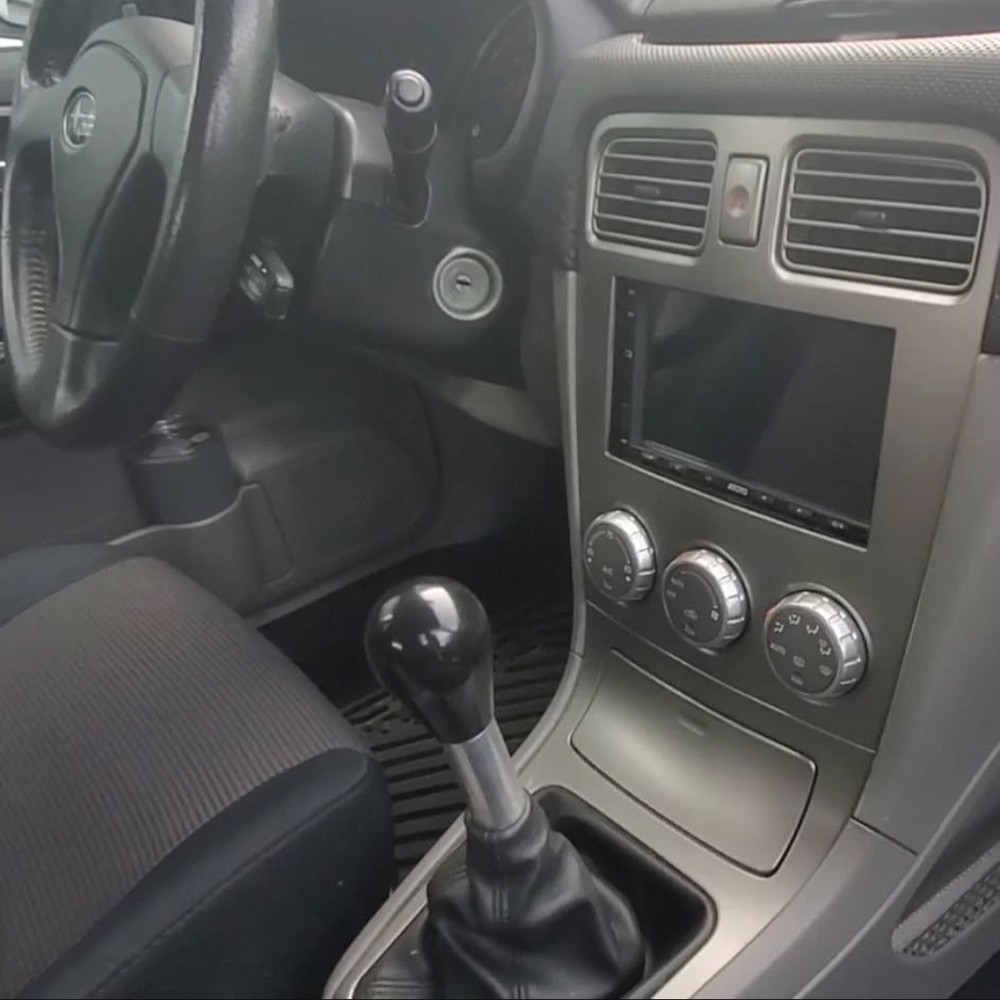
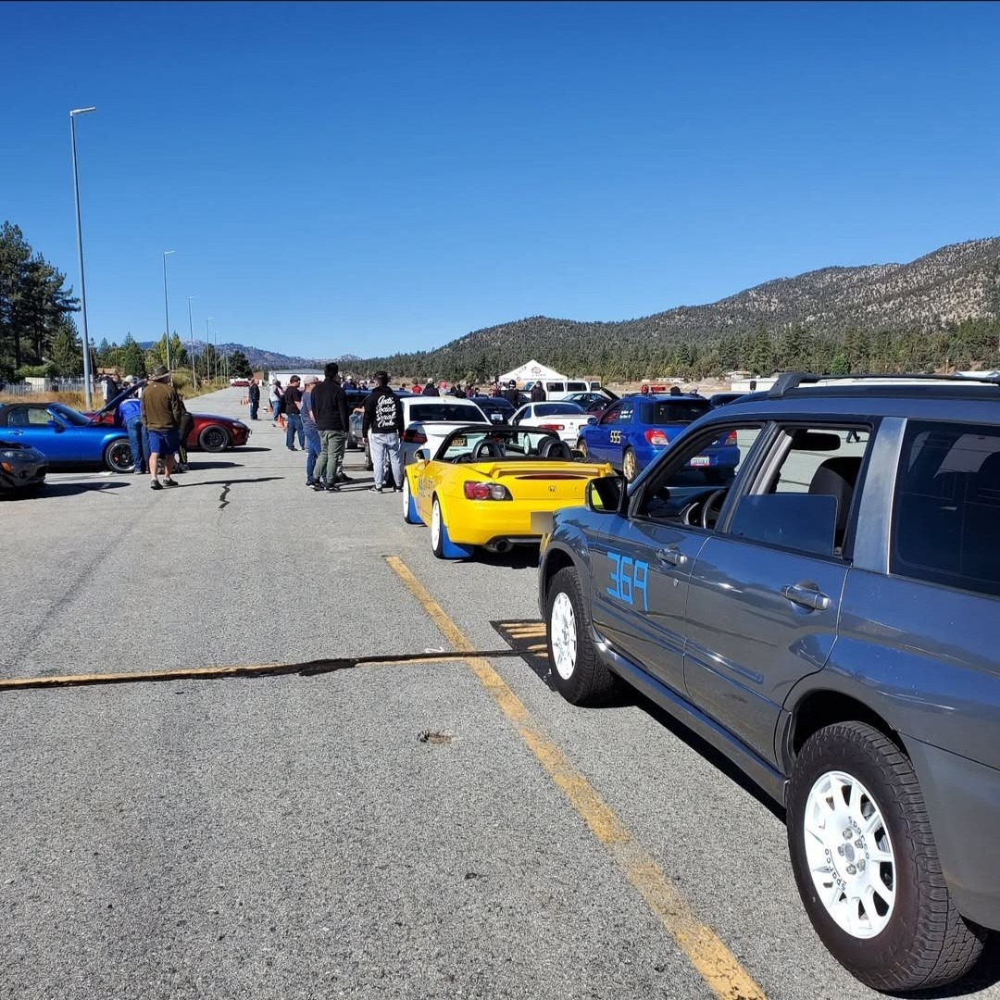
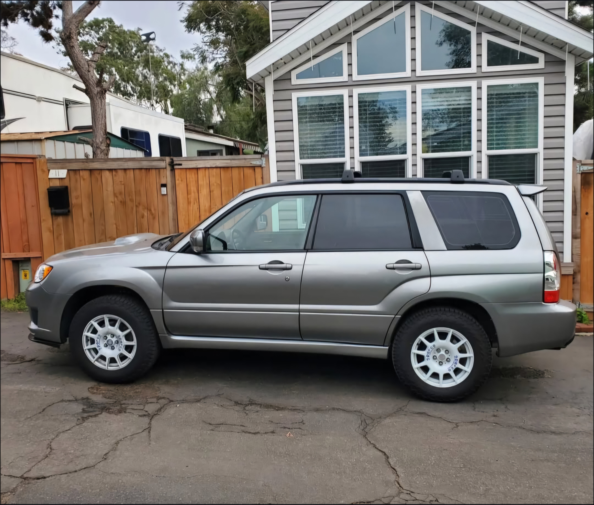
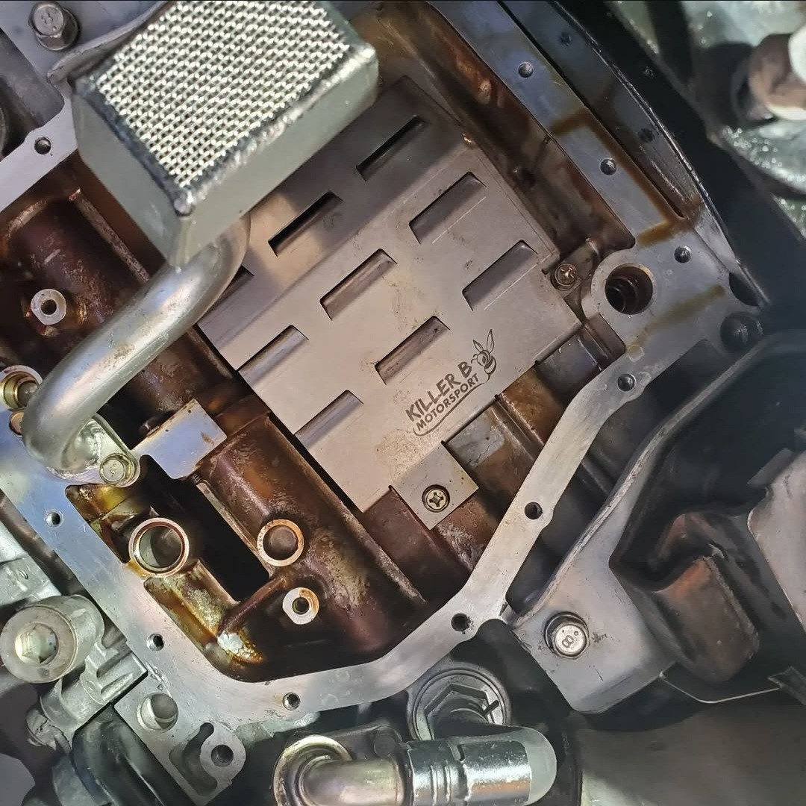
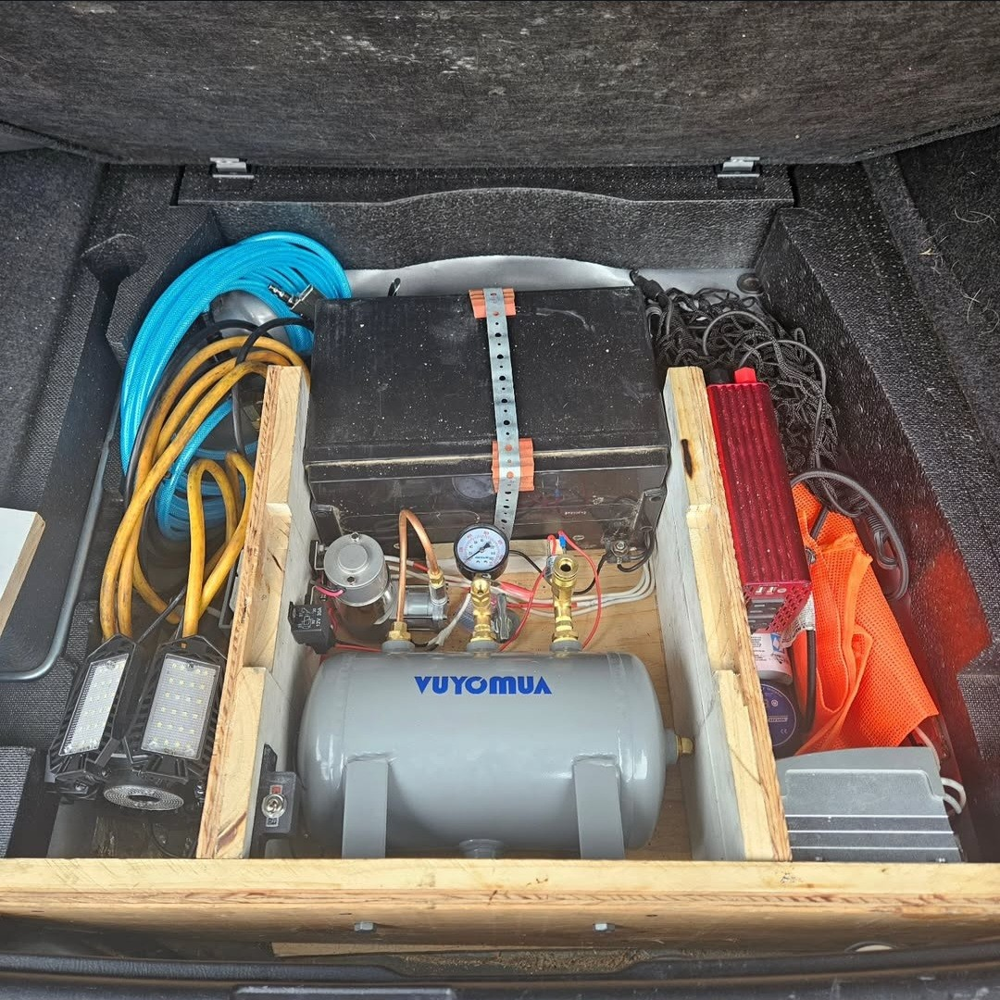

Subaru
Custom modifications, performance upgrades, maintenance, and 3D-printed solutions tailored for the Subaru Forester.

Welcome to my Subaru Forester XT Sports
A deep dive into my 2007 Subaru Forester XT Sports—its history, capabilities, and why it’s the perfect platform for performance and modifications.

Mastering Maintenance: Self-Servicing the Forester
Hands-on maintenance and upgrades for my Forester XT—brakes, bearings, clutch, and more. A DIY approach for performance, reliability, and customization.

Atoto S8 Head Unit Installation
Upgraded my Forester with an Atoto S8 head unit, featuring custom graphics, OBD2 integration, backup cam, and seamless mobile connectivity.

Autocross Adventures and Rallycross Aspirations
Taking my Forester XT to the track—autocross thrills, three-wheel turns, and a possible move to rallycross for the next challenge.

Spoiler Installation
Installed an OEM spoiler on my Forester, custom-painted for a factory look, improving both aesthetics and aerodynamics.

EJ Engine Oil Management System Upgrade
Upgraded the EJ engine’s oil system with a high-capacity pan, external filter, and reinforced pickup for better reliability, cooling, and extended oil life.

STI Intercooler and Hood Scoop Upgrade
Upgraded to an STI intercooler, hood scoop, and splitter for better cooling, airflow, and future performance tuning potential.
JDM Folding Side Mirrors Installation
Installed JDM folding side mirrors for added convenience, protection, and a sleek, factory-like integration.

Custom 3D Printed Glove Box Shelf
Designed and 3D printed a custom glove box shelf for better organization and quick access to essential documents.
Free · Open Source — files on Thingiverse & GitHub

Custom Solar-Powered Air Compressor Installation
Installed a solar-powered air compressor system for on-the-go tire inflation, preserving space and vehicle balance without external modifications.

SMITHtRONiC SG Sports Bumper Amber Light Kit
A custom auxiliary light kit designed for the Forester SG Sports bumper—seamless fit, adjustable beam, and plug-and-play installation.
Free · Open Source — files on Thingiverse & GitHub

Custom 3D-Printed Headlight Rear Caps for LED Bulbs
Designed to improve airflow and fitment for LED bulbs, featuring louvered vents for cooling and a pass-through slot for the voltage box.
Free · Open Source — files on Thingiverse & GitHub